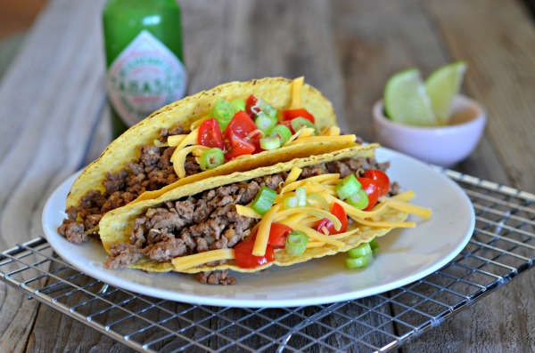

Simple Tacos

Description
The original delicious simple tacos! So easy to make and the simplicity will make none of your friends dislike them.
Ingredients
- Ground beef
- Tortillas
- Shredded cheese
- Any type of sauce you like
- Any greens you like(optional)
Steps
- Place minced beef into a pan over high heat
- Once the beef is done remove it and set it aside
- Cook up tortillas in the same pan over medium head flipping it every 5-10 seconds until it is done
- Now assemble your tacos by placing some beef onto the tortilla and drizzle it with cheese
- Optional: Garnish your taco with whatever sauce/greens you want